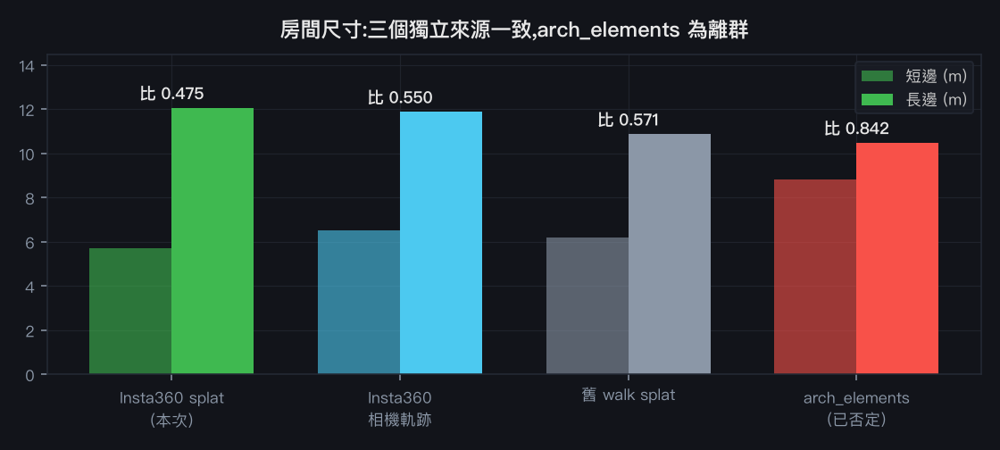
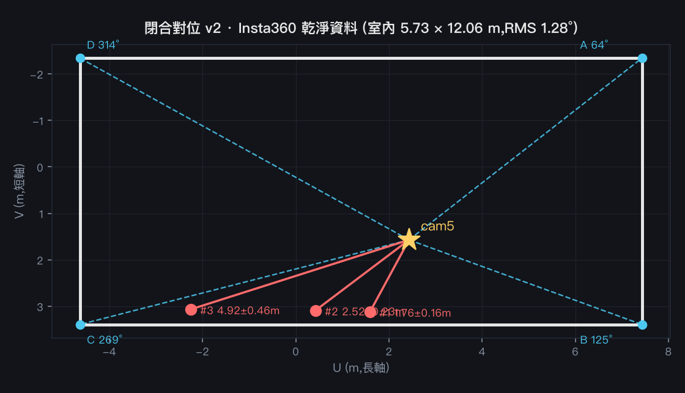
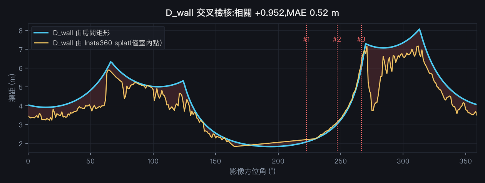

用 Insta360 官方 3DGS 重跑 lt4 對位鏈
RMS 3.51° → 1.28°，180° 歧義解決
承 閉合對位 v1。當時最大的兩個保留是「房間尺寸來源可疑」與「殘留 180° 翻轉風險」。 這次用 Insta360 X5 於 8/12 生成的全新、乾淨的 3DGS 重跑整條鏈，兩個問題都有了答案。
一、資料來源：Insta360 官方 3DGS 資產
該 3D 空間為公開分享連結，載入時取用兩個資產（簽章網址）：
| 檔案 | 內容 |
|---|---|
1_3DGS.sog（16 MB） | SOG v2 容器，100 萬顆高斯，產生器 splat-transform v3.1.3 |
2_cameras.json（792 KB） | 1,914 個相機完整內外參：478 個拍攝點 × center/up/down/left/right |
因為產生器就是
splat-transform，直接用官方工具轉出標準 PLY（1M 高斯 / 3 SH bands），不需自行逆推格式。
236 MB 的 PLY 僅本機歸檔（/Volumes/3D/x5-3dgs/insta360-lt4-20260812/），可由 16 MB 的 sog 隨時重生。二、房間尺寸：三個獨立來源一致，arch_elements 確定是離群

| 來源 | 尺寸 | 長寬比 | 性質 |
|---|---|---|---|
| Insta360 splat（本次） | 5.73 × 12.06 m | 0.475 | 全新獨立資料 |
| Insta360 相機軌跡跨距 | 6.53 × 11.88 m | 0.550 | 同資料，不同量法 |
| 舊 walk splat（Manhattan） | 6.21 × 10.87 m | 0.571 | v1 使用的來源 |
| 環景四角後方交會推得 | — | 0.50 | 純影像推導 |
| arch_elements | 8.82 × 10.48 m | 0.842 | 軸對齊剖面量斜房間 → 外接矩形 |
值得注意：v1 中我純粹從環景四個牆角推出的長寬比 0.50，與這份全新獨立資料的 0.475 幾乎一致。
而 69.1 ㎡ 也符合台灣標準教室（約 67.5 ㎡）。
三、後方交會：RMS 1.28°

四、180° 歧義：這次解決了
v1 時兩個候選解在影像空間完全等價，只能靠點雲端證據，最後是 3:2 的勉強多數。 這次改用幾何一致性判別——對兩個候選各自計算「房間矩形推得的 D_wall」與「splat 實測 D_wall」的相關：
| 候選解 | D_wall 相關 | MAE | 判定 |
|---|---|---|---|
| rot1−（採用） | +0.600 | 1.21 m | 一致 |
| rot3− | −0.038 | 2.10 m | 不一致 |
為什麼這個判別比 v1 可靠：它用整個房間的幾何輪廓（360 個方位角的牆距），
而不是單一顏色地標。兩解差距 +0.600 vs −0.038 是決定性的，不是勉強多數。黃色管樑的位置證據也指向同一解。
五、D_wall 交叉檢核：+0.952

過程中的一個修正。最初算出來只有 +0.592／MAE 1.23 m，明顯比 v1 的 +0.971 差。
根因是這份新 splat 透過窗戶重建了大量室外幾何，把該方位的「牆距」拉遠，而矩形模型看不到室外——比較不公平。
只計室內點後即回到 +0.952。這不是調參數湊數字，而是修正一個定義上的不對等。
六、三位學生的距離（v2）
| # | 影像方位角 | D_wall(v1) | D_wall(v2) | 距離 v1 | 距離 v2 |
|---|---|---|---|---|---|
| 1 | 222.6° | 2.17 m | 2.07 m | 1.85 m | 1.76 ± 0.16 m |
| 2 | 247.1° | 3.21 m | 3.02 m | 2.67 m | 2.52 ± 0.23 m |
| 3 | 266.5° | 6.59 m | 6.01 m | 5.39 m | 4.92 ± 0.46 m |
±為蒙地卡羅（300 次）傳播四角標定不確定度。v1 → v2 的變化在 5–9% 之間，方向一致（都略微縮短）。
七、仍然未解的部分
徑向的鑑別度依舊來自方位角，不是深度模型。比值法的三個比值仍是 0.850/0.833/0.819，幾乎相同——
「誰比較遠」還是 D_wall(方位角) 決定的。要真正的逐人徑向測距，仍需腳在畫面內的幀
（v1 第 8-5 節已實測三人的腳都被畫面底邊截斷）。
新資料本身的品質觀察：這份 splat 有 45.2% 的高斯異性 >10（針狀），異性中位 8.6、p95 高達 170。
這對應既有的 de-needle 痛點，也是分支 B（重訓＋正則化）要處理的目標。
資料歸檔：
相關：閉合對位 v1 · 四台攝影機 × YOLO26-depth · 總覽
/Volumes/3D/x5-3dgs/insta360-lt4-20260812/（含 README 與重生指令）｜
分析程式：~/3d/yolo26-test/（room_insta2.py、realign_full.py、tiebreak_dwall.py、dwall_fair.py）相關：閉合對位 v1 · 四台攝影機 × YOLO26-depth · 總覽